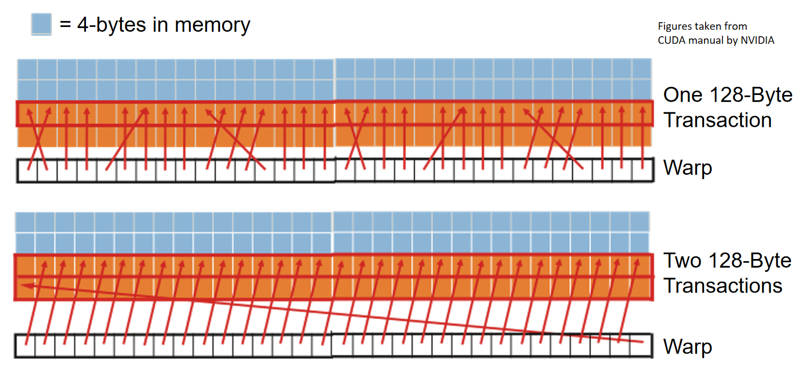

LDST unit
GPU memory system starts with load-store units. These units process memory access instructions and emit the necessary memory transactions.
在Exec阶段，生成load、store的mem_fetch的流程如下：
stream_processor::cycle()
stream_processor::execute()
ldst_unit::cycle()
ldst_unit::memory_cycle()
ldst_unit::process_memory_access_queue_l1cache()
l1_latency_queue[bank_id][m_config->m_L1D_config.l1_latency - 1] = mf;
在Exec阶段，会执行load和store指令，进而从DRAM中拉取或存储数据，具体调用流程如下
stream_processor::cycle()
stream_processor::execute()
ldst_unit::cycle()
ldst_unit::L1_latency_queue_cycle()
l1_cache::access()
data_cache::access()
m_tag_array->probe(block_addr, cache_index, mf, true)
data_cache::process_tag_probe()
data_cache::rd_miss_base()
baseline_cache::send_read_request()
m_miss_queue.push_back(mf)
ldst_unit::cycle()
如果m_response_fifo不为空，则从中取出返回的mf请求
m_L1D
ldst_unit::memory_cycle()
ldst_unit::process_memory_access_queue_l1cache()
Coalescing
Combining memory accesses made by threads in a warp into fewer transactions
This reduces the number of transactions between SIMT cores and DRAM
Coalescing example

m_pending_writes– process_cache_access() L1_latency_queue_cycle() memory_cycle() write_back()
m_pending_writes– ldst_unit::issue()